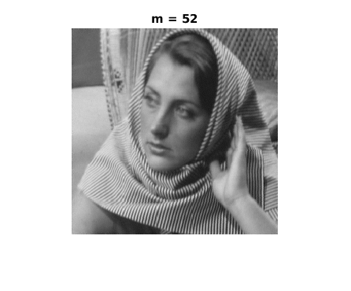
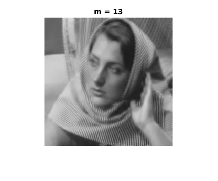
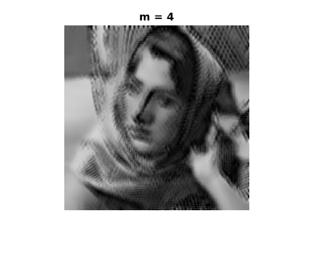
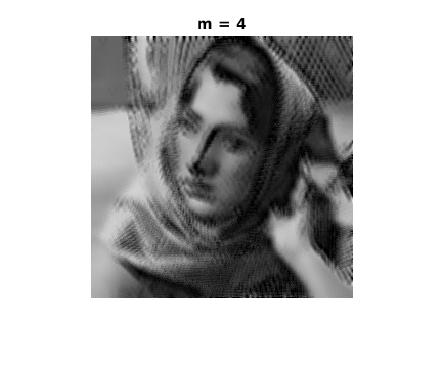
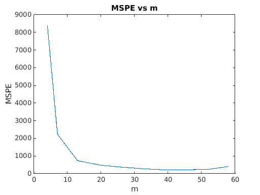
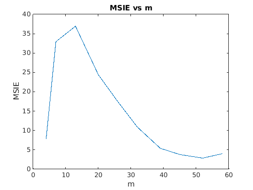

Contents
myMainScript1
Using omp
tic; img = imread('../data/barbara256.png'); [x,y] = size(img); pSize = 8; % The patches are created by sliding the 8X8 window over % the image shifting 1 unit each time either in x or y patches = zeros((x-pSize+1)*(y-pSize+1),pSize^2); i = 0; %First shifting the window in y-direction for col = 1:x-pSize+1 for row = 1:y-pSize+1 i = i +1; patch = img(col:col+pSize-1,row:row+pSize-1); patches(i,:) = patch(:); end end n = pSize^2; phi = randn(64,64); f = [0.9, 0.8, 0.7, 0.6, 0.5, 0.4, 0.3, 0.2, 0.1, 0.05]; m_range = ceil(f*n); for l = 1:size(m_range,2)
m = m_range(l);
phi_m = phi(1:m,:);
% X is a fat matrix with n rows
X = patches';
Y = phi_m * X;
sd = 0.05 * mean(abs(Y(:)));
% Added noise to Y
Y = Y + (sd * randn(size(Y)));
%dct matrix
U = kron(dctmtx(pSize)',dctmtx(pSize)');
A = phi_m*U;
Apply OMP
S_t = omp(Y,A,sd);
patches0 = (U*S_t)';
Stitch together the recovered patches
out = zeros(x,y); weight = zeros(x,y); i = 1; % i -> it will select rows of patches0 for col = 1:x-pSize+1 for row = 1:y-pSize+1 temp_patch = reshape(patches0(i,:),[pSize pSize]); % Taking average out(col:col+pSize-1,row:row+pSize-1) = out(col:col+pSize-1,row:row+pSize-1) + temp_patch; weight(col:col+pSize-1,row:row+pSize-1) = weight(col:col+pSize-1,row:row+pSize-1) + 1; i = i+1; end end out = uint8(out./weight); figure imshow(out) title(['m = ',num2str(m)]) 
 
 Store errors for different m
MSPE(l) = mean(mean((patches0 - patches).^2));
MSIE(l) = mean(mean((out-img).^2));
end
Display Errors
figure plot(m_range, MSPE) title('MSPE vs m') xlabel('m') ylabel('MSPE') figure plot(m_range, MSIE) title('MSIE vs m') xlabel('m') ylabel('MSIE') toc
Elapsed time is 771.176335 seconds. 